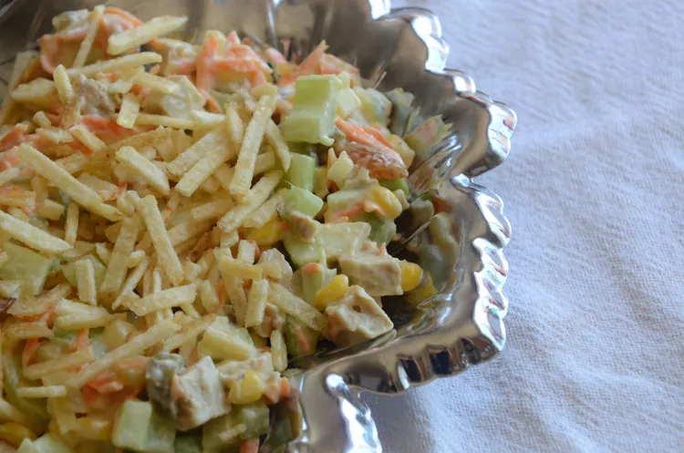

Salpicao Recipe

Description
A much beloved recipe of Salpicao, a Brazilian Chicken Salad that goes perfectly along a BBQ or like we call in Brazil: Churrasco
Ingredients
- 1 pound coarsely shredded cooked chicken
- 1 (8 ounce) can whole kernel corn, drained
- 1 cup pitted green olives, chopped
- ¾ cup golden raisins
- 2 carrots, grated
- 1 stalk celery, finely chopped
- ¼ green apple, finely chopped
- 4 tablespoons heavy cream
- 1 tablespoon Dijon mustard
- 1 pinch white sugar
- salt and freshly ground black pepper to taste
- 2 tablespoons chopped fresh parsley, or to taste
Steps to do
- Combine chicken, corn, olives, raisins, carrots, celery, and apple in a large bowl.
- Stir cream and mustard together in a cup and season with sugar, salt, and pepper. Pour dressing over salad and mix to combine. Season with salt and pepper and sprinkle with parsley.
- Arrange lettuce leaves and watercress on a platter and spoon chicken salad in the middle. Sprinkle shoestring potato sticks on top and press into salad. Chill until ready to serve